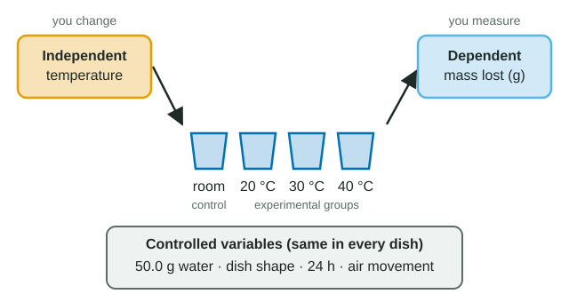

One change at a time
Two glasses of water sit in different places for a week, and one loses more water. If the places differ in warmth, light and drafts, you cannot say which of those mattered. A controlled experiment fixes this: you deliberately change one factor, keep everything else the same, and measure what happens. Then a difference in the result can be traced to the one thing you changed.
Worked example: naming the parts of an experiment

Setup: a class puts 50.0 g of water into identical open dishes and leaves them for 24 hours at 20, 30 or 40 °C, three dishes per temperature. They weigh each dish at the start and end. A fourth set of dishes sits at room temperature with no warming.
- Testable question: does temperature affect how much water evaporates from an open dish in 24 hours?
- Independent variable (what you set): temperature, at 20, 30 and 40 °C.
- Dependent variable (what you measure): mass of water lost in 24 hours, in grams.
- Controlled variables (kept the same in every group): dish size and shape, starting mass, time, air movement, humidity of the cabinets.
- Control group: the unwarmed dishes, which show how much water an open dish loses at the baseline.
- Repeated trials: three dishes per condition, so chance variation shows up.
- If-then prediction: if the temperature is higher, then more water will evaporate in 24 hours, because more molecules have enough energy to break their hydrogen bonds and escape.
A quick way to tell the two main variables apart: the independent variable is decided before the run starts; the dependent variable is read off at the end. If you could fill in a column of the data table before doing anything, that column is the independent variable.
Control group or controlled variable?
| Control group | Controlled variable | |
|---|---|---|
| What it is | A whole group of the experiment | One factor |
| What happens to it | Gets the baseline: no treatment, or the normal condition | Kept the same in every group |
| Why | Gives a comparison for the treatment (experimental) groups | Removes it as a possible reason for a difference |
| Evaporation example | Unwarmed dishes | Starting mass of 50.0 g |
Spotting the flaw: two things changed at once
Suppose the 40 °C cabinet was the only one with a fan. Moving air sweeps water vapor away from the surface, so evaporation speeds up. Now the 40 °C dishes differ from the others in two ways, temperature and air movement, and the extra water loss cannot be credited to either one. The fix is to make air movement a controlled variable: a fan in every cabinet, or in none.
Exam questions about experiments very often hide exactly this flaw: different containers, different amounts, different days or different people measuring, changing alongside the independent variable. When you read a design, list what differs between the groups. There should be one thing on that list.
Why repeat?
Three strips of the same paper, dipped the same way, climb to 6.1, 6.4 and 5.9 cm. Measurements vary by chance even when nothing is changed. Repeated trials show how big that variation is. If the difference between two groups is no bigger than the variation inside each group, the data do not show an effect. In one class's paper strip test, strips 0.5, 1, 2 and 4 cm wide had means of 6.1, 6.2, 6.0 and 6.1 cm, while strips of the same width differed by up to 0.5 cm: width had no clear effect. That is a real result, not a failed experiment.
Testable questions, hypotheses and predictions
- A testable question names a factor you can change and a result you can measure. "Does adding soap change the number of drops a coin can hold?" is testable. "Why do water molecules like each other?" is not: molecules do not like anything, and no factor is named.
- A hypothesis is a proposed explanation that can be tested: "Soap weakens the attraction between water molecules at the surface."
- An if-then prediction applies it to your experiment: "If soap is added, then the coin will hold fewer drops, because fewer hydrogen bonds hold the surface together." The independent variable goes in the "if", the dependent variable in the "then", and the reason after "because".
Results can support a prediction or fail to support it. They never prove a hypothesis true for every case, because a later test could still disagree.